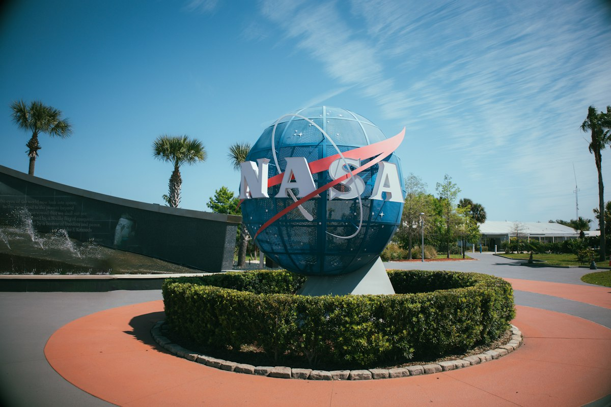

Artemis IV Refueling Plan Enters Its Second Redesign
NASA's second architecture revision adds a classified number of tanker flights to a depot-to-lander rendezvous in final tanking orbit

The diagram NASA released during its recent Artemis IV briefing showed a sequence of orbital operations between Earth and the moon. A depot ship sat in low Earth orbit. Tanker Starships docked with it, marked with the notation "(multiple)" for the number of visits. Nobody at the briefing could say how many flights the refueling campaign would actually require.
That gap between the architecture and the arithmetic is the defining feature of the mission. Artemis IV has grown simpler in its program structure and more complex in its orbital logistics. The number of tanker flights needed to fill the depot, and then to top off the lander in a second orbit, remains classified.
The Mission Profile
The mission will launch a Space Launch System rocket with the four Artemis IV astronauts aboard NASA's Orion capsule to high Earth orbit. There they will rendezvous and dock with the Starship lunar lander, which will have completed its refueling campaign before their arrival.
Using Starship's engines, the two spacecraft will burn for the moon and separate upon arrival in low lunar orbit. Two astronauts will remain aboard Orion while the other two descend to the surface in Starship.
After surface operations, the landing pair will board Starship to launch back to lunar orbit, dock with Orion, and begin the return to Earth. The profile echoes Apollo-era choreography. The refueling that must happen before any of it is where the plan gets long.
The Depot Architecture
According to NASA's Artemis IV outline, SpaceX will first launch a depot ship to low Earth orbit. The depot will serve as the repository for all the propellant the Starship lander eventually needs. Multiple tanker Starships will fill the depot before the crewed lander arrives for its first docking.
Once the lander completes its initial fuel transfer, it will undock from the depot and raise its altitude to what NASA has labeled the final tanking orbit. The name describes a parking spot above the depot's original altitude, chosen to minimize propellant loss before the last transfer.
At some point after the lander departs low Earth orbit, SpaceX will launch another round of tanker ships to fill the depot with additional propellant. The depot will then rendezvous with the lander in final tanking orbit for what the agency's graphic presents as the last fuel transfer before Orion launches on the SLS.
What the Diagrams Do Not Show
The graphic shows a tanker Starship docked with the depot, with the word "(multiple)" written beside it. That notation appears at both refueling phases. The total number of tanker flights for the initial depot fill, and the total for the second round, are not stated in any public NASA document.
NASA's website explainer for Artemis IV says the staggered orbital staging creates flexibility around when the SLS can launch the crew. The agency says the approach reduces the total fuel SpaceX needs for the mission. Starship will take Orion directly to low lunar orbit instead of the higher orbit envisioned in earlier plans.
The fuel savings are real but the flight count is not. The number of tanker Starships required at each stage remains the single largest unknown in the mission architecture.
The Range of Estimates
The uncertainty over refueling flights has a public history. By summer 2021, a Government Accountability Office audit estimated that Starship could need up to 16 launches to support an Artemis moon landing. That number represented the high end of planning assumptions at the time.
Earlier this month, a member of the Aerospace Safety Advisory Panel said the refueling count could reach 22. SpaceX founder and CEO Elon Musk responded on X with a lower figure, posting that the actual number would be closer to six or eight flights.
The spread between those estimates reflects unresolved questions about propellant margins, depot capacity, and the efficiency of orbital fuel transfers. Each variable carries its own uncertainty, and none has been settled by a flight demonstration.
What Remains Unproven
One thing is certain: SpaceX has not yet demonstrated orbital refueling in space. The entire Artemis IV mission architecture depends on that capability working as designed, and the timeline for proving it is compressed.
NASA has set a deadline for an uncrewed Starship lunar landing by the end of 2027. If SpaceX cannot demonstrate the refueling strategy or meet that milestone, the agency could select Blue Origin's Blue Moon lander for Artemis IV instead.
Blue Origin faces its own development deadlines. The competition between the two companies for the lunar lander contract remains open. The refueling question is one of several that will determine which vehicle carries the first Artemis astronauts to the surface.
The Staging Question
The mission architecture describes a choreographed sequence of orbital operations, each one requiring precise execution in a real space environment. NASA's graphics present the sequence as a clean progression from depot to lander to Orion to the moon.
The public documentation leaves the number of tanker flights at each stage unspecified. The word "(multiple)" appears where a concrete number would resolve the architecture's central uncertainty.
That ambiguity will either close before launch or determine which lander NASA flies for the first crewed return to the moon.